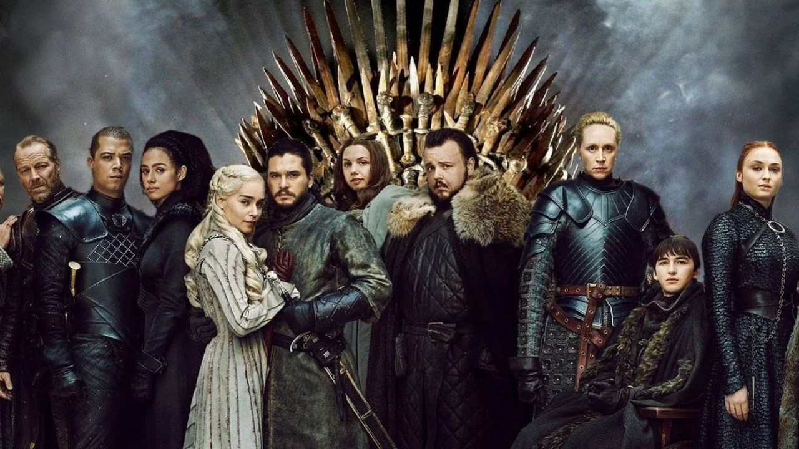

Merhaba. Ben A.Cem UĞUZ!Kocaeli'de yaşıyorum.Bilim Kurgu izlemeyi ve polisiye okumayı çok seviyorum. Tam bir Marvel hayranıyım!
Web geliştirme ile ilgileniyorum. Kodluyoruz'un eğitim serisi sayesinde harika şeyler öğrendim ve öğrenmeye devam ediyorum!
Game of Thrones
Taht mücadelelerinin anlatıldığı bu dizide iki halkın mücadelesi anlatılır. Bu hikaye adeta bitmeyen bir hikayeden oluşmaktadır. Sonsuz entrikalar ve bitmek bilmeyen mücadeleler anlatılır. Kral Targaryen çıkan bir isyan ile birlikte tahtından indirilir.